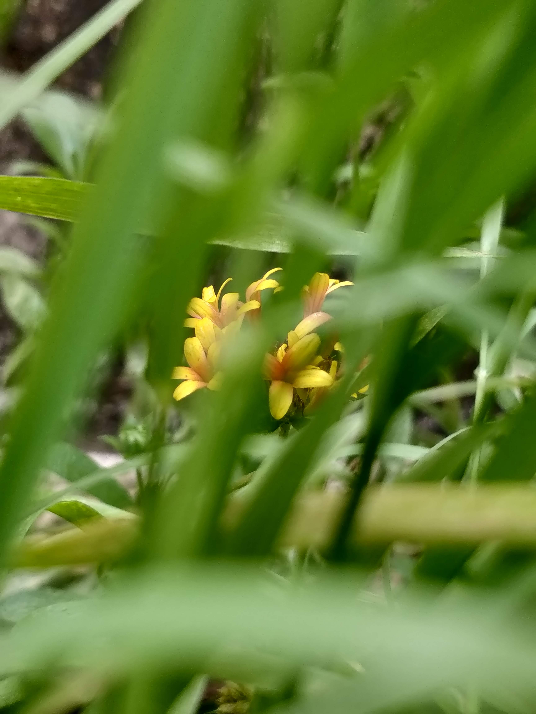

Shree Sahaj Nature Cure Foundation
Formerly Shree Sahaj Naturopathy & Yoga Center

Shree Sahaj Nature Cure Foundation is a Section 8 not-for-profit company (CIN: U86900CT2026NPL020841), registered in 2026 to carry forward and widen a mission that began in 2010 as Shree Sahaj Naturopathy and Yoga Center. Located in the heart of Durg, Chhattisgarh, our journey was founded by Dr. Nirmala Gupta, a respected and compassionate naturopathist whose life has been dedicated to the service of others. With over a decade of experience, Dr. Gupta has transformed countless lives by helping individuals reconnect with their inner balance and heal naturally—physically, mentally, and emotionally.
Rooted in the timeless principles of naturopathy and yoga, the Foundation offers a holistic approach to wellness. We believe that true healing begins from within, and through personalized natural therapies, disciplined yogic practices, and empathetic care, we empower people to overcome chronic issues, manage stress, and lead healthier, happier lives.
Our journey started with a simple yet powerful purpose—to serve humanity through nature's wisdom. That purpose continues today across two units: our sister clinic, Shree Sahaj Naturopathy & Yoga Center (MSME Registered), which delivers day-to-day treatment at nominal charges, and the Foundation, which carries the mission further into community health camps and awareness work. Read our full legacy, from 2010 to today.
“I believe that in future, drugless therapies will emerge as the most effective mode of treatment to combat chronic diseases.”
These words reflect the deep conviction with which our founder has guided this mission since its inception in 2010, and which now carries forward through the Foundation's community work. Her unwavering belief in the power of natural healing continues to inspire everyone who walks through our doors.
My Vision
My vision is to create a world where people embrace natural healing as a way of life. I dream of a community where health is not merely the absence of disease, but a harmonious balance of the body, mind, and spirit. Through Shree Sahaj Nature Cure Foundation, I aim to make holistic wellness accessible to everyone—regardless of age or background—so that they may experience the joy of living in tune with nature and themselves.
I envision a future where every individual recognizes their body’s innate power to heal and flourish, guided by the age-old science of naturopathy and the profound discipline of yoga.
My Mission
My mission is to serve humanity by restoring the lost connection between nature and well-being. Through natural therapies, traditional healing techniques, and mindful practices, I strive to provide compassionate care that goes beyond treating symptoms—addressing the root cause of suffering.
SSNC is committed to educating people about the importance of preventive health, nurturing inner strength, and cultivating a peaceful, conscious lifestyle—while extending community health camps and awareness programs so that the wisdom of natural healing reaches beyond our clinic walls. Every session, every touch, every word of guidance is given with the deepest intent to heal, to uplift, and to inspire transformation from within.
Registered Name
Shree Sahaj Nature Cure Foundation
CIN
U86900CT2026NPL020841
Registered / Mailing Address
309, Sadar Bazar, Durg – 491001, Chhattisgarh
ssncfoun@gmail.com
Contact Number
+91 75874 43583
Day-to-day clinical and wellness services continue to be delivered through our sister unit, Shree Sahaj Naturopathy & Yoga Center (MSME Registered, established 2010). See our full journey.
॥ ॐ नमो भगवते महासुदर्शनाय वासुदेवाय धन्वंतरये अमृतकलशहस्ताय सर्वभयविनाशाय सर्वरोगनिवारणाय त्रिलोकपथाय त्रिलोकनाथाय श्री महाविष्णुस्वरूपाय श्रीधन्वंतरीस्वरूपाय श्रीश्रीश्री औषधचक्राय नारायणाय नमः ॥
With a heart full of devotion, humble gratitude is offered to Lord Dhanvantari, the divine source of healing and the eternal bearer of Ayurveda. As the God of Medicine and the compassionate protector of health, His presence is not just divine—it is a gentle light that touches the soul of every healer and every one in need of healing.
In His sacred wisdom lies the power to soothe pain, to restore balance, and to awaken the body’s natural rhythm with nature. Each breath of healing, each moment of relief, is a silent reflection of His grace.
May His divine blessings continue to guide every path that seeks wholeness. May every life touched by suffering find strength through His light, and may His presence dwell forever in the hearts of those who choose to heal—with love, with purity, and with faith.
We believe in the power of nature, the wisdom of tradition, and the strength of the inner spirit.